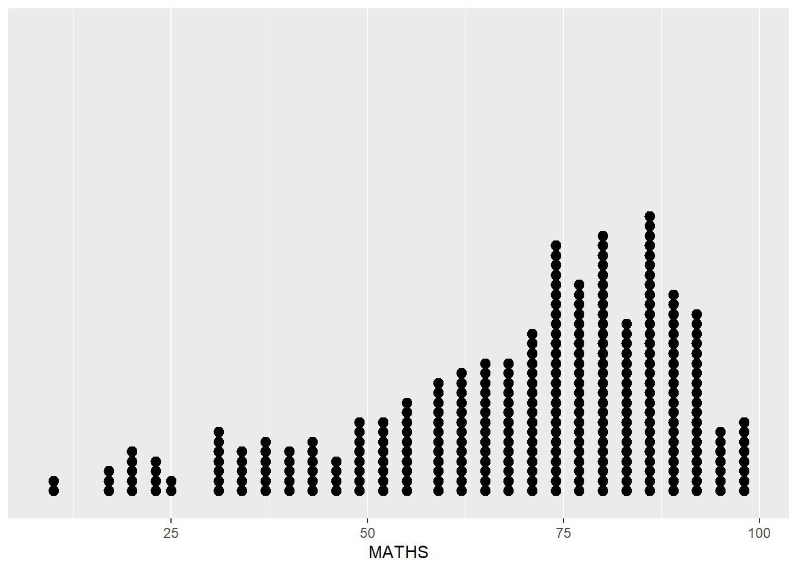
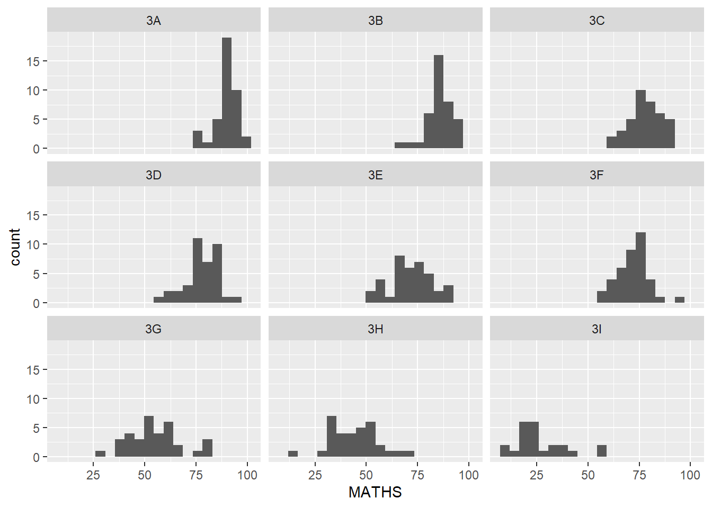

pacman::p_load(tidyverse)Hands-on Exercise 1: A Layered Grammar of Graphics: ggplot2 methods
1 Overview
This hands-on exercise introduces the fundamental principles and key components of ggplot2. We will explore how to to create statistical graphics using the Layered Grammar of Graphics principle. By the end, we will apply ggplot2’s essential graphical elements to produce elegant and informative statistical graphics.
2 Getting Started
2.1 Install and load the required libraries
To begin, we’ll check for the necessary R packages. If they are installed, we’ll load them. Otherwise, we’ll install and then load them into the R environment.
2.2 Import data
The code chunk below imports exam_data.csv into R environment using read_csv() function of readr package.
exam_data <- read_csv("data/Exam_data.csv")Rows: 322 Columns: 7
── Column specification ────────────────────────────────────────────────────────
Delimiter: ","
chr (4): ID, CLASS, GENDER, RACE
dbl (3): ENGLISH, MATHS, SCIENCE
ℹ Use `spec()` to retrieve the full column specification for this data.
ℹ Specify the column types or set `show_col_types = FALSE` to quiet this message.The dataset includes year end examination grades of a cohort of primary 3 students from a local school. There are a total of 7 attributes. 4 of them are categorical data type and the other 3 are continuous data type.
The categorical attributes are: ID, CLASS, GENDER and RACE.
The continuous attributes are: MATHS, ENGLISH and SCIENCE.
3 Introduce ggplot
ggplot2 is an R package for declaratively creating data-driven graphics based on The Grammar of Graphics. It is also part of the tidyverse family specially designed for visual exploration and communication. For more detail, visit ggplot2 link
3.1 R Graphics VS ggplot
First we compare how R Graphics, the core graphical functions of Base R and ggplot plot a simple histogram.
hist(exam_data$MATHS)
ggplot(data=exam_data, aes(x = MATHS)) +
geom_histogram(bins=10,
boundary = 100,
color="black",
fill="grey") +
ggtitle("Distribution of Maths scores")
The code chunk is relatively straightforward when using R’s base graphics. This raises the question: why is ggplot2 often recommended?
As Hadley Wickham explains, the advantage of ggplot2 lies not just in its syntax for creating plots, but in the conceptual framework it introduces. ggplot2 teaches a powerful way of thinking about data visualization—mapping variables to the visual properties of geometric objects in a structured and meaningful way. This approach fosters a deeper understanding of visualization as a tool for effectively communicating data insights.
4 Grammar of Graphics
Before diving into ggplot2, it is crucial to understand the principles of the Grammar of Graphics.
The Grammar of Graphics is a framework for data visualization that deconstructs graphs into semantic components, such as scales and layers. This concept, introduced by Leland Wilkinson in his 1999 book The Grammar of Graphics (Springer), addresses a fundamental question:
What is a statistical graphic?
In essence, the Grammar of Graphics provides the rules for combining mathematical and aesthetic elements to create meaningful visualizations.
Principles of the Grammar of Graphics:
Graphics as Layers of Grammatical Elements: Graphs are composed of distinct layers, each representing a specific aspect of the data or visual structure.
Aesthetic Mapping for Meaningful Plots: Mapping data variables to visual properties (e.g., color, shape, size) ensures that plots convey meaningful insights.
A robust grammar of graphics enables us to:
Understand the composition of complex graphs.
Uncover unexpected connections between seemingly different types of graphics (Cox, 1978).
Establish a foundation for interpreting a wide variety of visualizations.
Guide the creation of well-formed and correct graphics.
However, while the Grammar of Graphics helps us identify well-constructed visuals, it also allows for grammatically correct but nonsensical graphics, emphasizing the importance of thoughtful design and context.
4.1 A Layered Grammar of Graphics
ggplot2 is an implementation of Leland Wilkinson’s Grammar of Graphics. The figure below shows the seven grammars of ggplot2.

Reference: Hadley Wickham (2010) “A layered grammar of graphics.” Journal of Computational and Graphical Statistics, vol. 19, no. 1, pp. 3–28.
Each component plays a vital role in constructing meaningful and flexible visualizations. Below is a brief description of each building block:
Data: The dataset that serves as the foundation for the visualization.
Aesthetics: Map data attributes to visual properties such as position, color, size, shape, or transparency, allowing the graph to communicate meaningful patterns.
Geometries: Define the visual representation of data points, such as points, bars, lines, or other shapes.
Facets: Subdivide the data into subsets, enabling the creation of multiple panels or variations of the same graph.
Statistics: Apply transformations or summaries to the data, such as calculating means, medians, or confidence intervals, to highlight key insights.
Coordinate Systems: Determine the plane or framework in which the data is displayed, such as Cartesian or polar coordinates.
Themes: Customize non-data elements of the plot, such as the titles, axis labels, gridlines, or legend background.
5 Essential Grammatical Elements in ggplot2: data
Let us call the ggplot() function using the code chunk below.
ggplot(data=exam_data)
Note:
A blank canvas appears.
ggplot()initializes a ggplot object.The data argument defines the dataset to be used for plotting.
If the dataset is not already a data.frame, it will be converted to one by
fortify()
6 Essential Grammatical Elements in ggplot2: Aesthetic mappings
Aesthetic mappings connect attributes of the data to visual characteristics of the plot, such as position, color, size, shape, or transparency. Each visual characteristic encodes an aspect of the data, enabling the visualization to effectively convey information.
In ggplot2, all aesthetic mappings are defined using the aes() function. Notably, each geom layer in a plot can have its own aes() specification, allowing for flexibility in customization.
The below code chunk incorporates aesthetic elements into a plot.
ggplot(data=exam_data,
aes(x= MATHS))
Note: ggplot includes the x-axis and the axis’s label.
7 Essential Grammatical Elements in ggplot2: geom
Geometric objects, or geoms, represent the actual marks placed on a plot to visualize data. They define how data points are displayed, such as through points, lines, bars, or polygons. Choosing the appropriate geom is essential to effectively communicate the patterns and insights in your data.
Here are some commonly used geoms in ggplot2:
geom_point: Creates individual points (e.g., for scatter plots).geom_line: Draws lines (e.g., for line charts).geom_smooth: Adds smoothed lines, useful for trend analysis or approximations.geom_bar: Produces bar charts, where bars represent data values or counts.geom_histogram: Creates histograms by binning values into ranges.geom_polygon: Draws arbitrary shapes, often for complex visualizations.geom_map: Generates polygons in the shape of a map. Themap_data()function provides built-in map datasets for use with this geom.

A plot must have at least one geom; there is no upper limit. You can add a geom to a plot using the + operator.
For complete list, please refer to here.
7.1 Geometric Objects: geom_bar
The code chunk below plots a bar chart by using geom_bar().
ggplot(data=exam_data,
aes(x=RACE)) +
geom_bar()
7.2 Geometric Objects: geom_dotplot
In a dot plot, the width of a dot corresponds to the bin width (or maximum width, depending on the binning algorithm), and dots are stacked, with each dot representing one observation.
In the code chunk below, geom_dotplot() of ggplot2 is used to plot a dot plot.
ggplot(data=exam_data,
aes(x = MATHS)) +
geom_dotplot(dotsize = 0.5)Bin width defaults to 1/30 of the range of the data. Pick better value with
`binwidth`.
Note: The y scale is not very useful, in fact it is very misleading.
The code chunk below performs the following two steps:
scale_y_continuous()is used to turn off the y-axis, andbinwidth argument is used to change the binwidth to 2.5.
ggplot(data=exam_data,
aes(x = MATHS)) +
geom_dotplot(binwidth=2.5,
dotsize = 0.5) +
scale_y_continuous(NULL,
breaks = NULL) 
7.3 Geometric Objects: geom_histogram()
In the code chunk below, geom_histogram() is used to create a simple histogram by using values in MATHS field of exam_data.
ggplot(data=exam_data,
aes(x = MATHS)) +
geom_histogram()`stat_bin()` using `bins = 30`. Pick better value with `binwidth`.
Note that the default bin is 30.
7.4 Modifying a geometric object by changing geom()
In the code chunk below,
bins argument is used to change the number of bins to 20,
fill argument is used to shade the histogram with light blue color, and
color argument is used to change the outline colour of the bars in black
ggplot(data=exam_data,
aes(x= MATHS)) +
geom_histogram(bins=20,
color="black",
fill="light blue")
7.5 Modifying a geometric object by changing aes()
The code chunk below changes the interior colour of the histogram (i.e. fill) by using sub-group of aesthetic().
ggplot(data=exam_data,
aes(x= MATHS,
fill = GENDER)) +
geom_histogram(bins=20,
color="grey30")
This approach can be used to colour, fill and alpha of the geometric.
7.6 Geometric Objects: geom-density()
geom_density() computes and visualizes a kernel density estimate, offering a smoothed alternative to histograms. It is particularly useful for continuous data that originates from an underlying smooth distribution, providing a more refined representation of the data’s probability density.
The following example demonstrates how to use geom_density() to plot the distribution of Math scores as a kernel density estimate.
ggplot(data=exam_data,
aes(x = MATHS)) +
geom_density()
The code chunk below plots two kernel density lines by using colour or fill arguments of aes().
ggplot(data=exam_data,
aes(x = MATHS,
colour = GENDER)) +
geom_density()
7.7 Geometric Objects: geom_boxplot
geom_boxplot() displays continuous value list. It visualises five summary statistics (the median, two hinges and two whiskers), and all “outlying” points individually.
The code chunk below plots boxplots by using geom_boxplot().
ggplot(data=exam_data,
aes(y = MATHS,
x= GENDER)) +
geom_boxplot() 
Notches are used in box plots to help visually assess whether the medians of distributions differ. If the notches do not overlap, this is evidence that the medians are different.
The code chunk below plots the distribution of Maths scores by gender in notched plot instead of boxplot.
ggplot(data=exam_data,
aes(y = MATHS,
x= GENDER)) +
geom_boxplot(notch=TRUE)
7.8 Geometric Objects: geom_violin
geom_violin() is used to create violin plots, which are effective for comparing multiple data distributions. Unlike ordinary density curves, which can become visually cluttered when comparing more than a few distributions, violin plots arrange distributions side by side for clearer comparison. This makes them especially useful for visualizing and comparing grouped or categorized data.
The example below illustrates how to use geom_violin() to plot the distribution of Math scores by gender.
ggplot(data=exam_data,
aes(y = MATHS,
x= GENDER)) +
geom_violin()
7.9 Geometric Objects: geom_point()
geom_point() is especially useful for creating scatterplot.
The code chunk below plots a scatterplot showing the Maths and English grades of pupils by using geom_point().
ggplot(data=exam_data,
aes(x= MATHS,
y=ENGLISH)) +
geom_point() 
7.10 geom objects can be combined
The code chunk below plots the data points on the boxplots by using both geom_boxplot() and geom_point().
ggplot(data=exam_data,
aes(y = MATHS,
x= GENDER)) +
geom_boxplot() +
geom_point(position="jitter",
size = 0.5) 8 Essential Grammatical Elements in ggplot2: stat
The Statistics functions statistically transform data, usually as some form of summary. For example:
frequency of values of a variable (bar graph)
- a mean
- a confidence limit
There are two ways to use these functions:
add a
stat_()function and override the default geom, oradd a
geom_()function and override the default stat.
8.1 Working with stat()
The boxplots below are incomplete because the positions of the means were not shown.
ggplot(data=exam_data,
aes(y = MATHS, x= GENDER)) +
geom_boxplot()
8.2 Working with stat - the stat_summary() method
The code chunk below adds mean values by using stat_summary()function and overriding the default geom.
ggplot(data=exam_data,
aes(y = MATHS, x= GENDER)) +
geom_boxplot() +
stat_summary(geom = "point",
fun = "mean",
colour ="red",
size=4) 
8.3 Working with stat - the geom() method
The code chunk below adds mean values by using geom_() function and overriding the default stat.
ggplot(data=exam_data,
aes(y = MATHS, x= GENDER)) +
geom_boxplot() +
geom_point(stat="summary",
fun="mean",
colour="red",
size=4) 
8.4 Adding a best fit curve on a scatterplot?
The scatterplot below shows the relationship of Maths and English grades of pupils. The interpretability of this graph can be improved by adding a best fit curve.
ggplot(data=exam_data,
aes(x= MATHS,
y=ENGLISH)) +
geom_point() 
In the code chunk below, geom_smooth() is used to plot a best fit curve on the scatterplot.
ggplot(data=exam_data,
aes(x= MATHS, y=ENGLISH)) +
geom_point() +
geom_smooth(size=0.5)Warning: Using `size` aesthetic for lines was deprecated in ggplot2 3.4.0.
ℹ Please use `linewidth` instead.`geom_smooth()` using method = 'loess' and formula = 'y ~ x'
Note: The default method used is loess.
The default smoothing method can be overridden as shown below.
ggplot(data=exam_data,
aes(x= MATHS,
y=ENGLISH)) +
geom_point() +
geom_smooth(method=lm,
linewidth=0.5)`geom_smooth()` using formula = 'y ~ x'
9 Essential Grammatical Elements in ggplot2: Facets
Facetting is a technique used to generate small multiples, also known as trellis plots, where each plot represents a different subset of the data. It serves as an alternative to using aesthetics for visualizing additional discrete variables. In ggplot2, there are two main functions for faceting: facet_grid() and facet_wrap(). These allow for efficient and organized visualization of grouped data across multiple panels.
9.1 Working with facet_wrap()
facet_wrap wraps a 1d sequence of panels into 2d. This is generally a better use of screen space than facet_grid because most displays are roughly rectangular.
The code chunk below plots a trellis plot using facet-wrap().
ggplot(data=exam_data,
aes(x= MATHS)) +
geom_histogram(bins=20) +
facet_wrap(~ CLASS)
9.2 facet_grid() function
facet_grid() forms a matrix of panels defined by row and column facetting variables. It is most useful when you have two discrete variables, and all combinations of the variables exist in the data.
The code chunk below plots a trellis plot using facet_grid().
ggplot(data=exam_data,
aes(x= MATHS)) +
geom_histogram(bins=20) +
facet_grid(~ CLASS)
10 Essential Grammatical Elements in ggplot2: Coordinates
The Coordinates functions map the position of objects onto the plane of the plot. There are a number of different possible coordinate systems to use, they are:
coord_cartesian(): the default cartesian coordinate systems, where you specify x and y values (e.g. allows you to zoom in or out).coord_flip(): a cartesian system with the x and y flipped.coord_fixed(): a cartesian system with a “fixed” aspect ratio (e.g. 1.78 for a “widescreen” plot).coord_quickmap(): a coordinate system that approximates a good aspect ratio for maps.
10.1 Working with Coordinate
By default, the bar chart of ggplot2 is in vertical form.
ggplot(data=exam_data,
aes(x=RACE)) +
geom_bar()
The code chunk below flips the horizontal bar chart into vertical bar chart by using coord_flip().
ggplot(data=exam_data,
aes(x=RACE)) +
geom_bar() +
coord_flip()
10.2 Changing the y- and x-axis range
The below scatterplot is slightly misleading because the y-aixs and x-axis range are not equal.
ggplot(data=exam_data,
aes(x= MATHS, y=ENGLISH)) +
geom_point() +
geom_smooth(method=lm, size=0.5)`geom_smooth()` using formula = 'y ~ x'
The code chunk below fixed both the y-axis and x-axis range from 0-100.
ggplot(data=exam_data,
aes(x= MATHS, y=ENGLISH)) +
geom_point() +
geom_smooth(method=lm,
size=0.5) +
coord_cartesian(xlim=c(0,100),
ylim=c(0,100))`geom_smooth()` using formula = 'y ~ x'11 Essential Grammatical Elements in ggplot2: themes
Themes control elements of the graph not related to the data. For example:
background colour
size of fonts
gridlines
colour of labels
Built-in themes include: - theme_gray() (default) - theme_bw() - theme_classic()
A list of theme can be found at this link. Each theme element can be conceived of as either a line (e.g. x-axis), a rectangle (e.g. graph background), or text (e.g. axis title).
11.1 Working with theme
The code chunk below plot a horizontal bar chart using theme_gray()
ggplot(data=exam_data,
aes(x=RACE)) +
geom_bar() +
coord_flip() +
theme_gray()
A horizontal bar chart plotted using theme_classic().
ggplot(data=exam_data,
aes(x=RACE)) +
geom_bar() +
coord_flip() +
theme_classic()
A horizontal bar chart plotted using theme_minimal().
ggplot(data=exam_data,
aes(x=RACE)) +
geom_bar() +
coord_flip() +
theme_minimal()
12 Reference
Hadley Wickham (2023) ggplot2: Elegant Graphics for Data Analysis. Online 3rd edition.
Winston Chang (2013) R Graphics Cookbook 2nd edition. Online version.
Healy, Kieran (2019) Data Visualization: A practical introduction. Online version